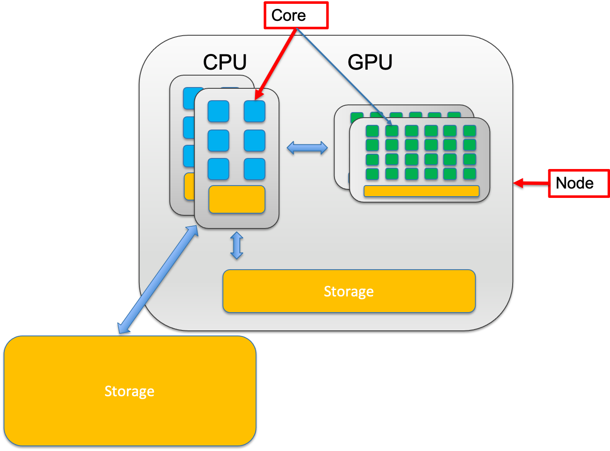
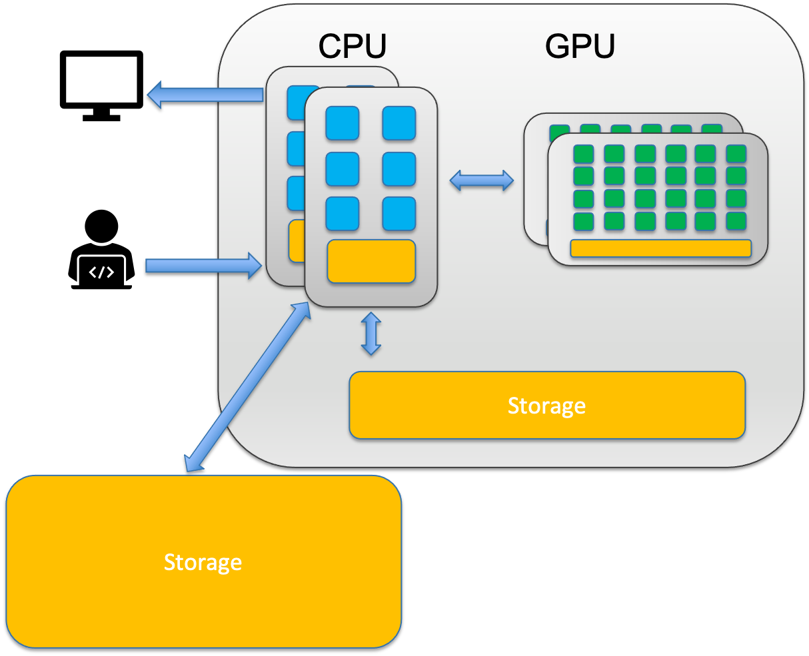
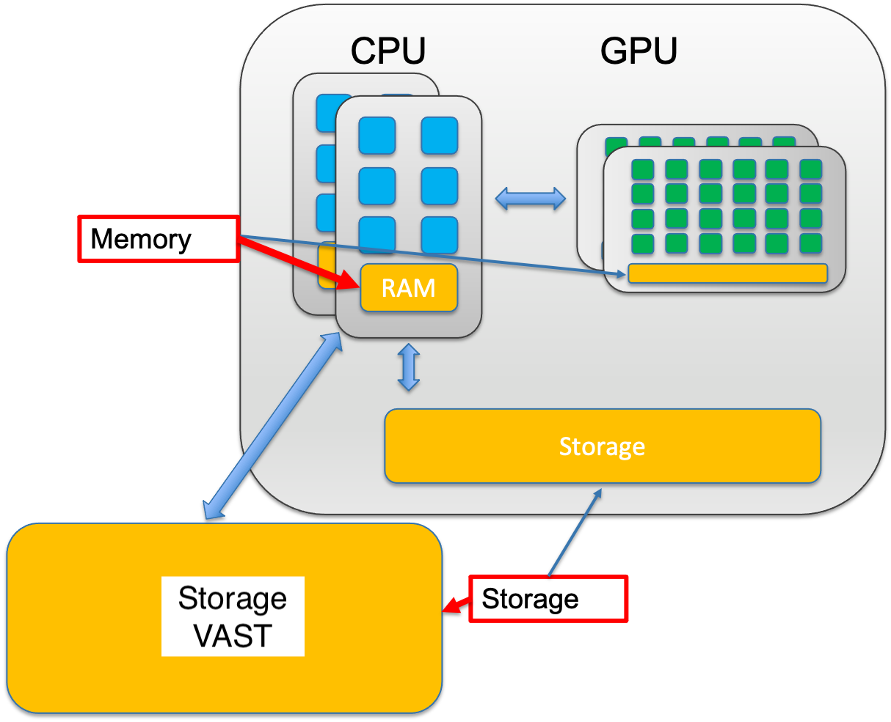
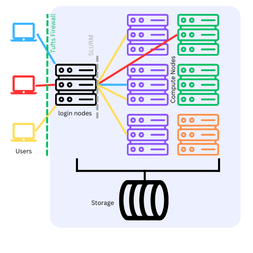

HPC Terminology#
What is a “Cluster”#
A computer cluster is a set of loosely or tightly connected computers (Nodes) that work together so that, in many respects, they can be viewed as a single system. Computer clusters have each computing unit set to perform the same/similar tasks, controlled and scheduled by software.
Cores vs Node#
A node is a single computer in the system, which has a number of computing units, cores.

Number of CPU cores must be specified when running programs on Tufts HPC cluster.
In the case one job requires multiple CPU cores, it’s recommended to specify if user desire all the required CPU cores to be allocated on a single node or multiple nodes.
Not all programs can utilize CPU cores allocated cross nodes. Please check your program’s specifics before submitting jobs.
CPU and GPU#
CPU – Central Processing Unit
A CPU can never be fully replaced by a GPU
Can be thought of as the taskmaster of the entire system, coordinating a wide range of general-purpose computing tasks
GPU – Graphics Processing Unit
GPUs were originally designed to create images for computer graphics and video game consoles
Performing a narrower range of more specialized tasks

GPU is like the turbo boost to a car’s engine, the CPU.
A computer can’t function without a CPU.
Not all computers have GPUs.
Memory and Storage#
The central processing unit (CPU) of a computer is what manipulates data by performing computations. In practice, almost all computers use a storage hierarchy, which puts fast but expensive and small storage options close to the CPU and slower but less expensive and larger options further away. Generally the fast volatile technologies (which lose data when off power) are referred to as “memory”, while slower persistent technologies are referred to as “storage”.
Memory
Small, fast, expensive
Volatile
Used to store information for immediate use
Storage
Larger, slower, cheaper
Non-volatile (retaining data when its power is shut off)

What to Expect on Tufts HPC Cluster?#
Each of the CPU cores on the HPC cluster could be less powerful than the ones on your laptop. The CPU clock speed on Tufts HPC cluster is ranged between 2.1GHz - 3.1 GHz.
There are a lot more CPU cores on a single node on the cluster than what’s available on your local desktop or laptop.
If you don’t have a framework that can utilize multiple GPUs, DO NOT request more than one GPU.
The more resources (Memory, CPU cores, GPUs) you request, the longer your job might have to wait in the queue.
Cluster VAST storage is fast, but may not be as fast as your local SSD.
When you first login to the HPC, you will be on a login node, while computation needs to be completed on compute node. You know you are on a login node when you see this via the shell:
your_utln@login-prod-01. See here for details on how to access the HPC and using these nodes.
Login Nodes vs Computing Nodes#
ALL work MUST to be performed on compute nodes!
If you see prompt like this
[your_utln@login-prod-01]
[your_utln@login-prod-02]
[your_utln@login-prod-03]
DON’T run any programs, YET!
Get resource allocation first!

Tufts HPC Partitions#
Tufts HPC cluster resources are grouped into different partitions. A partition is a logical collections of nodes that comprise different hardware resources and limits based on functionality and priority levels.
Partitions#
Public Partitions:
All users have equal access to the following public partitions. Job priorities are under the governance of Slurm Fair Share algorithm.
batch*: The default partition for standard jobs that do not require any special hardware or configurations. CPU only. Provides memory (RAM) up to 500GB.
gpu: Designated for jobs that require GPU resources. No CPU only jobs allowed.
interactive: Intended for CPU only interactive jobs, which are typically shorter in duration and smaller in resource requirement.
largemem: For CPU only jobs which require up to 1TB of memory (RAM).
mpi: Duplicate set of CPU resources as batch partition. Mainly for jobs that use the Message Passing Interface (MPI) for parallel computing across multiple nodes.
preempt: Consists most resources on HPC cluster (CPU and GPU, public and contrib nodes). Jobs submitted to preempt partition has lower priority and can be preempted by contrib node owners’ higher priority jobs.
To get a full inventory of available resources and node specs, go to OnDemand Misc –> Inventory
From command line, use the following command to check what partitions you have access to:
$ sinfo
Time limit#
Each partition has a specific time limit.
PARTITION TIMELIMIT
batch* 7-00:00:00
gpu 7-00:00:00
interactive 4:00:00
largemem 7-00:00:00
mpi 7-00:00:00
preempt 7-00:00:00
preempt - Be aware,
preemptpartition consists of most of the nodes on the cluster, including contrib nodes from different research labs. When submitting jobs to preempt partition, you acknowledge that your jobs are taking the risk of being preempted by higher priority jobs. In that case, you will simply have to resubmit your jobs.
Modules#
What are modules?#
A tool that simplify the use of different software (versions) in a precise and controlled manner by initializing and configuring your shell environment without manual intervention. They allow users easily modify their shell environment during the session with modulefiles.
Modulefiles
Each modulefile contains the information needed to configure the shell environment for an application. (PATH, LD_LIBRARY_PATH, CPATH, etc.)
By loading a modulefile, the system automatically adjusts these variables so that the chosen application is ready to use.
Modules are useful in managing different versions of applications.
Modules can also be bundled into metamodules that will load an entire set of different applications.
Why Use Modules?#
Using modules simplifies managing your computational environment, making it easy to ensure that all necessary software and their correct versions are available for your tasks. This reduces potential conflicts and errors, streamlining your workflow and improving efficiency on the HPC cluster.
How to use modules?#
Module Cheat Sheet
module avail# ormodule av
module av <software>
module list
module load <software>
module unload <software>
module swap <loaded_software> <new_software>
module purge
To check available modules installed on the cluster:
[tutln01@login-prod-01 ~]$ module av
Upon login, environment variable
PATHis set for the system to search executables along these paths:[tutln01@login-prod-01 ~]$ echo $PATH /usr/local/bin:/usr/bin:/usr/local/sbin:/usr/sbin:/cluster/home/tutln01/bin:/cluster/home/tutln01/.local/bin
Example: Using gcc Compiler#
Check what versions of gcc compiler is available: load the version I would like to use, and use it:
[tutln01@login-prod-01 ~]$ module av gcc ----------------------------------------------------------- /opt/shared/Modules/modulefiles-rhel6 ------------------------------------------------------------ gcc/4.7.0 gcc/4.9.2 gcc/5.3.0 gcc/7.3.0 -------------------------------------------------------------- /cluster/tufts/hpc/tools/module --------------------------------------------------------------- gcc/8.4.0 gcc/9.3.0 gcc/11.2.0
Load the desired version of gcc:
[tutln01@login-prod-01 ~]$ module load gcc/7.3.0
Use
module listto check loaded modules in current environment:[tutln01@login-prod-01 ~]$ module list Currently Loaded Modulefiles: 1) use.own 2) gcc/7.3.0
Verify the
gccVersion:[tutln01@login-prod-01 ~]$ which gcc /opt/shared/gcc/7.3.0/bin/gcc [tutln01@login-prod-01 ~]$ echo $PATH /opt/shared/gcc/7.3.0/bin:/usr/local/bin:/usr/bin:/usr/local/sbin:/usr/sbin:/cluster/home/tutln01/bin:/cluster/ho me/tutln01/.local/bin [tutln01@login-prod-01 ~]$ gcc --version gcc (GCC) 7.3.0 Copyright (C) 2017 Free Software Foundation, Inc. This is free software; see the source for copying conditions. There is NO warranty; not even for MERCHANTABILITY or FITNESS FOR A PARTICULAR PURPOSE.
swap a module for another (doesn’t have to be the same software):
[tutln01@login-prod-01 ~]$ module swap gcc/7.3.0 gcc/9.3.0 [tutln01@login-prod-01 ~]$ module list Currently Loaded Modulefiles: 1) use.own 2) gcc/9.3.0
unload loaded modules:
[tutln01@login-prod-01 ~]$ module unload gcc [tutln01@login-prod-01 ~]$ echo $PATH /usr/local/bin:/usr/bin:/usr/local/sbin:/usr/sbin://home/tutln01/bin://home/tutln01/.local/bin
unload ALL of the loaded modules:
[tutln01@login-prod-01 ~]$ module purge